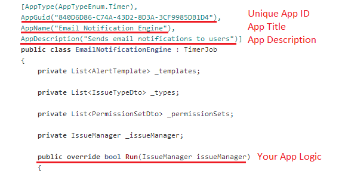
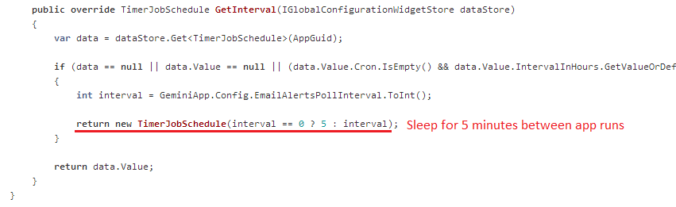
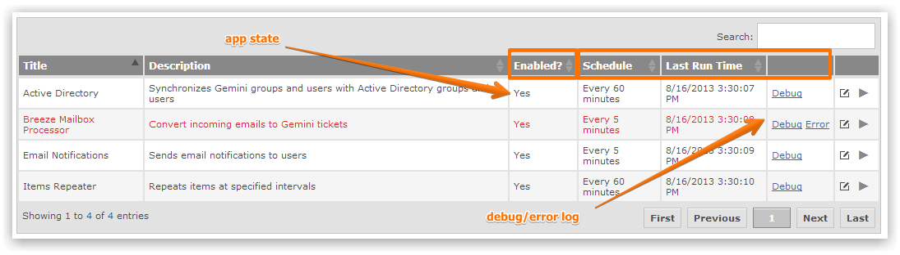
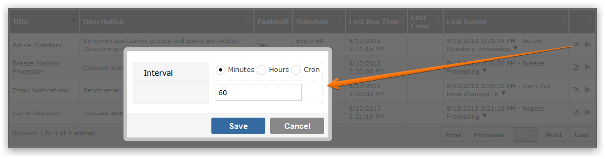

Timer apps allow you to invoke custom logic at set intervals. For example, you may wish to check for new comments every 15 minutes.
A custom Timer app consist of the following elements.


The GetInterval method should first check for a saved value and then return a default value if nothing has been saved.
DownloadThe Countersoft GitHub repository contains sample applications that are built using the Apps Framework
Gemini Administrators can either enable or disable every Event App.
Follow the packaging and deployment instructions to deploy Event app in Gemini.

You can manually invoke the Timer app at any time by clicking the Play button.
Timer apps can be configured to run at user specified intervals.

Cron job syntax is supported in additional to minute and hour intervals.